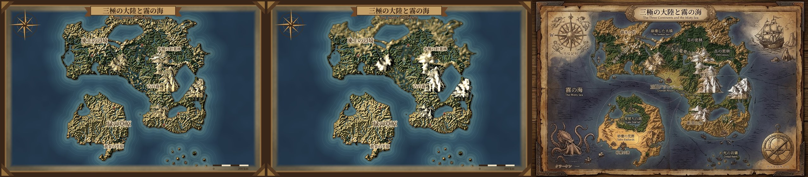

山の色を下の地面から決める試作(プログラム)
概要: ユーザー指示(2026-11-18)「データは私が持ち、Geminiは絵から推論している。推論の推論まで拘る必要はない。私の推論でほぼ合っているので、Geminiの指摘も参考にして進める」に従い、プログラムの絵を直しました。直した点は4つ: (1)山の色を下の地面の色から決め、ふもとを地面へなじませる (2)寒い所の山に雪の帽子 (3)氷・ツンドラ・湿地・寒冷砂漠の粗いまだらをなめらかにする (4)全体を明るく暖色に寄せる。各図は、左=直す前、中=直した後、右=Gemini。

絵番号 E037世界5(大陸3つ)
 絵番号 E038
絵番号 E038世界6(フィヨルド)
 絵番号 E039
絵番号 E039世界7(砂漠)
目で見た評価(私の印象。人の判断はユーザーに)
- 良くなった点: 山が貼り付けに見える度合いが減った。世界5では、寒い地域の山が白い雪の山になり、Geminiの白い山の見え方に近づいた。世界6は、氷がなめらかな面になり、山と地面がつながって見える。
- 悪くなった点: 山の形が見えにくくなった所がある(世界7の砂漠は、山が地面に溶けて読みにくい)。世界5の北部は、ツンドラを強くならした結果、ぼやけた薄茶色になり、細部が失われた。世界6は、全体が白く明るすぎて、Geminiのような緑がかった土地との区別が弱い。
- まだ違う点: Geminiの山は、少数の大きな尖った峰で、輪郭が濃い。こちらは、円すいが密に重なったままで、形の作り方は変えていない。
限界・未確認
- 山の色の決め方は、「山の絵の部分を、周りの地面の色に合わせて塗り直す」後処理で、山の絵を描く段階には入れていない。
- 3枚だけ。数字での評価はしていない(目で見た印象)。
- 前に出した「Geminiが各場所を何と読んだか」の自動分類は、まだら模様で意味のある区分にならず、使っていない。
- ならしの強さ・山の明暗の強さ・雪の範囲は、私が試して決めた値。
コード: gstyle2_gen.py(直した描画)/infer_gen.py(自動分類の試み)。